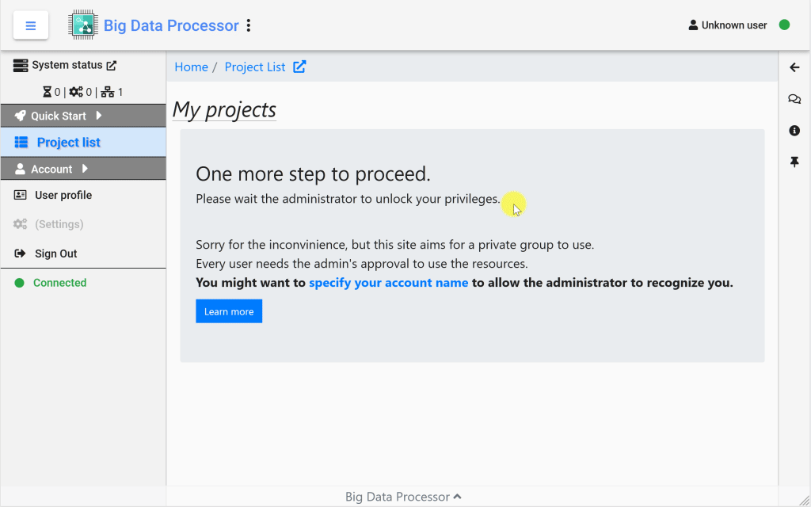

Account Management¶
Registration¶
At the top right corner of the BDP home page, you can find the Registration link if you haven’t signed in the BDP workbench. Click to the registration page and fill your email and a desired password for signing in. After registration, your account still has to be opened by the system admin. If you are the first account registered in the BDP workbench, this first account becomes the system admin automatically. You will need to change your display name in the BDP workbench to let the admin recognize you and open your account.
Tip
If the server is configured to provide the oAuth login from Google, the bottom Google button can be clicked. You won’t need to set the password if using this Google oAuth sign-in button to register or sign in.
{kind=link}
Account Profile¶
In the bottom of the left navigation panel, you can find the User Profile button. Click this button and
{kind=link}
See also
The system admin (system root) can set different roles for different users. Please see the user privileges section for detailed information.
{kind=link}